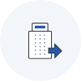

중소기업기술사업화 역량강화사업 소개 및 신청


사업 신청 메뉴얼 다운로드 신용조회 동의서 다운로드
중소기업 기술사업화 역량강화 사업 신청서 다운로드
중소기업 기술사업화 역량강화 사업 시행계획 공고
신용조회 동의서 다운로드
중소기업 기술사업화 역량강화 사업 신청서 다운로드
중소기업 기술사업화 역량강화 사업 시행계획 공고
 해당 접수는 상황에 따라 조기 마감될 수 있습니다.
해당 접수는 상황에 따라 조기 마감될 수 있습니다.
사업목적
사업화 되지 않은 기술 및 특허를 보유한 중소기업을 대상으로 사업화 진단을 통한 사업화지원, 기능개선(R&D), 기술이전 등의 종합지원을 통하여 사업화 성공률 제고
지원내용
추진절차
* 지원업체 수는 일부 변동 가능
지원대상
- 「중소기업기본법」 제2조에 따른 지식서비스업, 제조업 등을 영위하는 중소기업 중에서 아래 요건 중 1개 이상을 충족하는 경우
단, 해당 기술이 신청일 기준 양산, 판매 등 사업화가 진행된 경우는 제외
* 국가과학기술지식정보서비스(www.ntis.go.kr)에 정부지원 R&D 과제로 등록되어 있는 경우
* 정부지원 R&D 성공판정 공문 별도 제출 필요
- 개인기업은 대표, 법인기업은 법인이 권리 보유 필수
* 사업화할 수 있는 권리 : 소유권 또는 전용실시권
지원제외대상
- 「사업에 참여하는 자(신청기업, 대표자)가 다음의 어느 하나에 해당하는 경우
지원내용
사업화 지원
- 기술의 시장성 보완을 위해 지원한도 내에서 사업화 기획, 제품성능, 시장 마케팅 등을 종합적으로 지원
시장친화형 기능개선(R&D)
- 기술의 사업화를 위해 기능개선, 성능향상 등을 위한 R&D 지원
기술이전
- 기술거래 플랫폼(Tech-Bridge)에 등록하여 마케팅을 지원하고, 특허등록기술은 기술신탁을 통해 기술거래 및 보호 추진
세부 지원내용
- 기술사업화 진단심사를 통해 사업화 유망기업*으로 분류된 이후 발표평가를 통해 사업화 지원대상으로 선정된 기업
* 사업화유망기업(TC유형) : 기술완성도(T), 사업화역량(C)이 우수한 기업
** 총 사업비의 75% 이내 지원(예를 들어 정부지원금 최대 5,000만원 지원시 기업부담금 1,667만원 부담, 총사업비는 6,667만원)
사업화 지원 프로그램
- 사업화 기획
-
지원내용
1기술컨설팅 : 공정기술문제 해결
2경영컨설팅 : 경영전략, 인사, 조직 등
3비즈니스 모델 개선 : 사업화전략, 양산, 판로개척 등
- 제품 성능 테스트
-
지원내용
1시제품 제작: 금형 및 시제품 제작
2성능테스트 : 성능인증, 검증, 평가
- 시장 마케팅
-
지원내용
1시장조사 : 고객패널조사, 고객검증
2마케팅 전략 수립 : 광고, 가격전략, 고객관리, 유통전략 등
3전시회참가 : 국내 외 전시회 참가
4플랫폼 제작 : 홈페이지, 플랫폼 등 제작
* 사업화 지원 카테고리 3개 중 2개 이상 선택
사업화 지원
- 지원한도
- 최대 8,000만원
- 정부지원금 비중
- 75% 이내
- 지원업체 수
- 30개사
- 추진절차

- STEP 01
- 신청 ∙ 접수 중진공 홈페이지
중진공

- STEP 02
- 평가 ∙ 선정서류, 진단 및 발표평가
중진공

- STEP 03
- 협약체결중진공 ∙ 지원업체
(기업부담금 납부)
중진공

- STEP 04
- 중간점검 ∙ 완료점검중간점검 ∙ 완료점검
중진공

- STEP 05
- 발표평가 ∙ 사후관리완료보고서 제출 및
발표평가, 사업비 지급
중진공
시장친화형 기능개선
- 대상 : 기술사업화 진단을 통해 기술강화 추진기업*으로 분류된 기업
* 기술강화추진기업(MC 유형) : 시장성(M), 사업화 역량(C)이 우수한 기업
-
지원내용 : 개발 기술의 사업화를 위해 기능개선, 성능향상 등을 위한 R&D 지원
- 중진공에서 기술사업화 진단 후 대상기업 추천 → 중소기업기술정보진흥원(이하 기정원)에서 신청‧접수, 평가 및 지원 대상기업 선정
시장친화형 기능개선지원
- 지원기간
- 최대 1년
- 지원한도
- 최대 1억원
- 정부지원금 비중
- 80% 이내
- 지원업체 수
- 18개사
* 코로나-19로 인한 중소기업 R&D 부담완화 정책(중기부 고시 제2020-104호, '20.12.21)으로 기업부담연구개발비를 총사업비의 20% → 10%이상으로 완화하고 기업부담연구개발비(현금+현물) 중 10% 이상은 현금으로 부담
- 추진절차

- STEP 01
- 대상기업 추천 중진공이
기정원으로 추천
기정원
- STEP 02
- 접수안내사업설명회 등
사업 홍보
기정원
- STEP 03
- 신청 ∙ 접수온라인 접수
기정원
- STEP 04
- 평가 ∙ 선정현장조사 ∙
선정평가
기정원
- STEP 05
- 업체 선정심의 ∙ 확정
기정원
- STEP 06
- 사업개시협약 및
자금지원
기정원

- STEP 07
- 사업 관리과제진도관리
기정원

- STEP 08
- 최종평가최종평가 및
기술료 징수
기정원
기술이전
- 대상 : 기술사업화 진단을 통해 사업화 기술보유기업*으로 분류된 기업
* 사업화 기술보유기업(TM 유형) : 기술 완성도(T), 시장성(M),이 우수한 기업
-
지원내용 :
(기술마케팅) 기술거래 플랫폼(Tech-Bridge)에 등록하여 마케팅을 지원
(기술신탁) 특허권을 위탁한 중소기업에 특허관리, 기술이전중개, 기술분쟁 대응 등의 서비스 제공
신청기간 및 신청방법
신청기간
- 2022.2.14(월) ~ 2022.3.11(금) 18:00 까지
* 신청접수 결과에 따라 추가 모집 가능
신청방법
중소벤처기업진흥공단(http://www.kosmes.or.kr)홈페이지 신청
- 홈페이지 회원가입 → 지원사업 → 기타 → 중소기업 기술사업화 역량강화 사업 → 신청서 다운로드 → 작성한 신청서 및 기타서류 온라인으로 업로드*
* 온라인 신청 시 제출서류(사업신청서, 기타서류)는 PDF파일로 변환 후 업로드 요망
제출서류
- 사업 신청서
-
- 자가진단표, 사업신청서, 사업화계획서 각 1부(첨부 1)
*제출 파일명 : 업체명_사업신청서.pdf
- 자가진단표, 사업신청서, 사업화계획서 각 1부(첨부 1)
- 기타 서류
-
- 정보 수집‧이용‧제공‧조회 동의서 1부(개인 ☞ 첨부2, 기업 ☞ 첨부2~3)
- 고객정보 활용 동의서 1부(첨부4)
- 대표자 신분증 사본* 1부
* 주민번호 뒤 여섯 자리 삭제 후 제출, ex. 800111-1xxxxxx)
- 최근 3개년 표준재무제표* 각 1부(홈택스 발급자료)
* 2021년 표준재무제표 발급이 불가능한 경우 2018∼2020년 3개년 서류제출
* 창업 1년 미만 또는 간편장부대상자는 제출 제외 - 정부 R&D 완료판정 공문 1부 또는 특허등록 원부* 1부
* 특허청 키프리스 접속(www.kipris.or.kr) → 신청 기술 특허 검색 → 등록사항 → 특허등록원부 신청 및 출력
- 사업자등록증명원(홈택스 발급자료)
- 국세납세증명서(개인/법인) 및 지방세납세증명서(개인/법인)(홈택스 발급자료)
- 중소기업확인서 1부
* 제출 파일명 : 업체명_기타서류.pdf
기타 공지사항
근거 법령 및 관련 규정
- 중소기업진흥에 관한 법률 및 동법 시행령
- 중소기업 기술혁신 촉진법 및 동법 시행령
- 국가연구개발혁신법, 동법 시행령 및 시행규칙, 관련 행정규칙, 국가연구개발 시설장비의 관리 등에 관한 표준 지침 등
- 중소기업기술개발지원사업 운영요령 및 관리지침(세부사업지침 포함)
- 중소기업기술개발사업 기술료 관리 규정
본 공고문에서 정하지 아니한 사항은 중소기업 기술사업화 역량강화 사업 운영지침에 따름
문의처
중소벤처기업진흥공단 ESG진단기술처(055-751-9855, 9911)
- 중소기업통합콜센터 / (국번없이)1357
- 수도권경영지원처 / 서울특별시 양천구 목동동로 309 (목동) 중소기업유통센터사무동 17층 / 02-2130-1333
- 서부권경영지원처 / 대전광역시 서구 청사로 136(월평동) 대전무역회관 15층 / 042-281-3785, 3784
- 동부권경영지원처 / 대구광역시 동구 동대구로 489(신천동, 대구무역회관) 1403호 / 053-320-3112, 3113